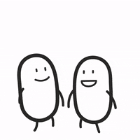

| ISTORIOA | |
|---|---|
|
Behin zen, urruneko Lurharria izeneko herrialde batean, izaki magikoz betetako herri bat. Han bizi zen Aira, neska gerlari ausarta, bere herria babesteko prest zegoena. Egun batean, munstro ilunak esnatu ziren eta herriko altxor sakratua lapurtu zuten, bakea arriskuan jarriz.
Airak bere burua eskaini zuen altxorra berreskuratzeko eta munstroei aurre egiteko. Bere bidaian zehar, baso misteriotsuak eta itzalak zeharkatu zituen, eta konturatu zen ez zirela izaki guztiak gaiztoak; batzuk lagun bihurtu ziren eta bere bidean lagundu zioten. Azkenik, etsai nagusiari aurre egin eta altxorra berreskuratu zuen, bere herrira bakea itzuliz. Baina Airak ulertu zuen benetako indarra ez zela borrokan bakarrik oinarritzen, baizik eta ulermenean eta ausardian. Orain, abentura hasten da… eta zure esku dago bere istorioa nola jarraituko duen. |
| HELBURUA | |
|---|---|
 |
Joko honen helburua, gaur egungo bideojoko gehienena bezala, ahalik eta sari gehien pilatuz irabaztea da. Horretarako daude, txanponak, izarrak... eta sari kopuru jakin batera iristen zarenean, irabazi egiten duzu! |
|
HURRENGORA JOAN |